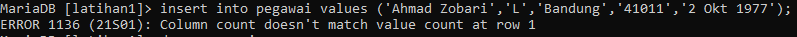
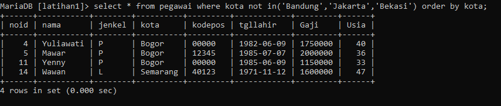
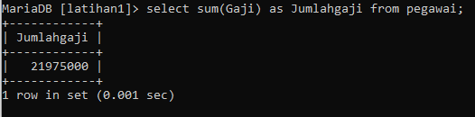

| No | Soal | Screenshoot |
|---|---|---|
| 1 | Tampilkan database yang anda miliki! | |
| 2 | Buatlah database dengan nama latihan. | |
| 3 | Cek database yang anda buat sudah masuk belum? | |
| 4 | Hapuslah database yang anda buat! | |
| 5 | Tampilkanlah masih adakah database yang anda buat! | |
| 6 | Buatlah kembali database dengan nama latihan1 | |
| 7 | Aktifkan database yang anda buat! | |
| 8 | Tampilkanlah tabel pada database yang anda buat, pesan apa yang tampil! | |
| 9 | Buatlah tabel dengan nama karyawan, pesan apa yang tampil jika anda belum mendefiniskan nama field! |
|
| 10 | Buatlah kembali tabel karyawan dengan field yang terdiri dari : |
|
| 11 | Tampilkan tabel yang anda buat pada database latihan1! | |
| 12 | Tampilkan struktur tabel tersebut! | |
| 13 | Tambahkanlah field berikut ke table karyawan : |
|
| 14 | Ubahlah nama field nopeg menjadi noid! | |
| 15 | Ubahlah field jeniskelamin menjadi jenkel dengan type char(1)! | |
| 16 | Tampilkanlah struktur tabel karyawan setelah melakukan perubahan! | |
| 17 | Ubahlah nama tabel karyawan menjadi tabel pegawai! | |
| 18 | Tampilkanlah tabel tersebut! | |
| 19 | Masukkanlah record pertama dengan data nama pegawai Ahmad Zobari, jenis kelamin L, kota Bandung , kode pos 41011 dan tanggal lahir 2 oktober 1977 |
 |
| 20 | Cek data yang anda masukkan sudah masuk belum? | |
| 21 | Tambahkan data sebanyak 5 record dengan data sebagai berikut : |
|
| 22 | Tampilkanlah seluruh data pegawai! | |
| 23 | Tampilkan nama dan jenis kelamin dari seluruh record pada tabel pegawai! |
|
| 24 | Tampilkan nama dan jenis kelamin tetapi hanya jenis kelamin perempuan! |
|
| 25 | Tampilkan seluruh record dengan diurutkan berdasarkan nama secara ascending! |
|
| 26 | Tampilkan seluruh record dengan diurutkan berdasarkan kota secara ascending! |
|
| 27 | Tampilkan seluruh record dengan diurutkan berdasarkan tanggal lahir secara ascending! |
|
| 28 | Tampilkan seluruh record dengan diurutkan berdasarkan nama secara Descending! |
|
| 29 | Tambahkanlah field gaji dengan type integer panjang field 12, not null dan default 0. |
|
| 30 | Tampilkanlah struktur tabel! | |
| 31 | Tampilkan seluruh record! | |
| 32 | Masukkanlah gaji untuk karyawan yang memilik noid=1 dengan 1000000. |
|
| 33 | Tampilkanlah karyawan dengan noid=1 | |
| 34 | Masukkanlah gaji sesuai dengan noid sebagai berikut : |
|
| 35 | Tampilkanlah seluruh record pegawai! |
|
| 36 | Tampilkanlah record nama, jenis kelamin, tgl lahir yang tgl lahirnya lebih kecil dari 1 januari 1980 dan urutkan berdasarkan nama! |
|
| 37 | Tampilkanlah record nama, jenis kelamin, tgl lahir yang tgl lahirnya lebih kecil dari 1 januari 1980 dan jenis kelamin L serta diurutkan berdasarkan nama! |
|
| 38 | Tampilkanlah record nama, jenis kelamin, tgl lahir yang tgl lahirnya lebih besar atau sama dengan 1 Januari 1980 dan lebih kecil atau sama dengan dari 31 Des 1985 serta diurutkan berdasarkan nama! |
|
| 39 | Tampilkanlah record nama, jenis kelamin, tgl lahir yang tgl lahirnya lebih besar atau sama dengan 1 Januari 1980 dan lebih kecil atau sama dengan dari 31 Des 1985 dan jenis kelamin L serta diurutkan berdasarkan nama! |
|
| 40 | Tampilkanlah seluruh pegawai dengan usianya saat ini! | |
| 41 | Tampilkan pegawai yang usianya sama dengan atau dibawah 25 tahun! | |
| 42 | Tampilkanlah pegawai yang kota kelahirannya Bandung! | |
| 43 | Tampilkan pegawai yang kota kelahirannya bukan Bandung! | |
| 44 | Tampilkanlah pegawai yang kota kelahirannya bukan Bandung, bukan Jakarta dan bukan Bekasi, serta diurutkan berdasarkan kota! |
 |
| 45 | Tampilkanlah pegawai yang kota kelahirannya bukan Bandung, bukan Jakarta dan bukan Bekasi, serta diurutkan berdasarkan kota dan nama! |
|
| 46 | Tampilkanlah pegawai yang gajinya diantara Rp 1.500.000 dan Rp 2.500.000, record diurutkan berdasarkan gaji dan nama! |
|
| 47 | Berapa pegawai yang gajinya dibawah Rp. 2000.000 | |
| 48 | Berapa rata-rata gaji pegawai! | |
| 49 | Berapa gaji terbesar! | |
| 50 | Berapa gaji terkecil! | |
| 51 | Berapa jumlah gaji seluruh pegawai! |  |
| 52 | Tampilkan pegawai dengan nama dimulai huruf a! | |
| 53 | Tampilkan noid, nama yang diawali dengan huruf d! | |
| 54 | Tampilkan noid, nama yang diakhiri dengan huruf i! | |
| 55 | Tampilkan noid, nama yang berakhiran wati! | |
| 56 | Tampilkan noid, nama yang mengandung huruf atau kata lia! |  |